Service design · Mobile · 2025
neuk is a mobile booking experience for private screening rooms, bringing the social experience of watching together back to streaming. From finding a room to unlocking the door and controlling the screen, everything happens in one app.

Problem
Everyone wants to watch together. Nobody has the room.
In cities like New York, small apartments and limited gathering spaces make it hard for friends to come together for a finale, premiere, or big game without compromising on comfort, cost, or space.
Opportunity
How might we create a shared viewing experience that combines the comfort of home, the quality of a theater, and the social energy of going out?
Solution
A private screening room, booked and controlled from your phone
neuk connects room discovery, hourly booking, contactless entry, and streaming controls in one mobile experience.
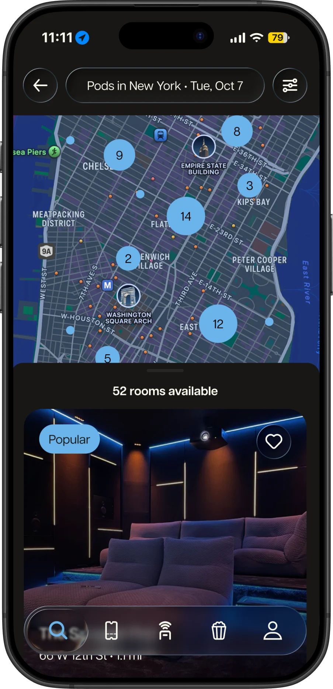
Browse
Find rooms by location, time, and group size.

Book
Compare rooms, check availability, and reserve by the hour.
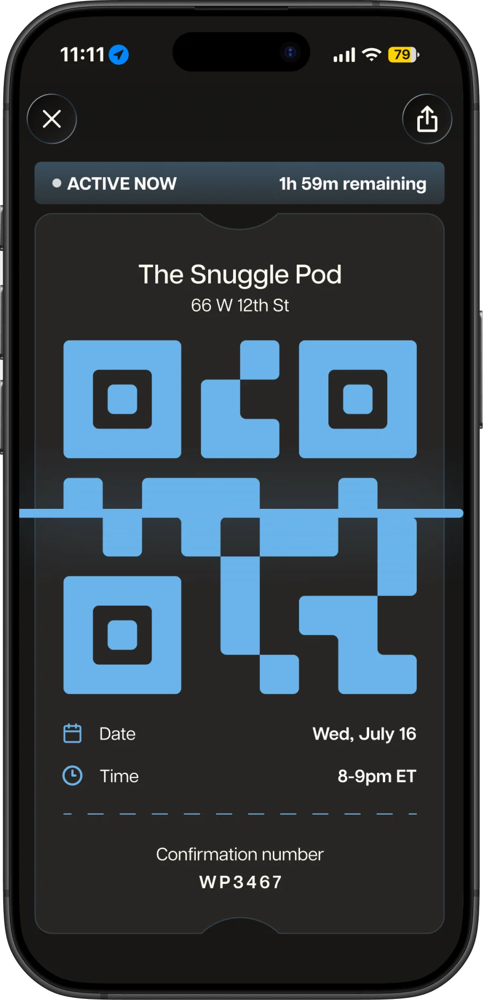
Check in
Access your upcoming reservation and scan your QR ticket to enter the room.
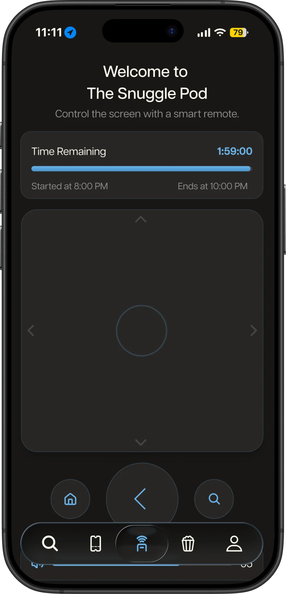
Stream
Connect your phone to the room’s screen and control playback directly through the app.
Three room sizes, priced by the hour
Pick the size that fits your group, then choose a room.
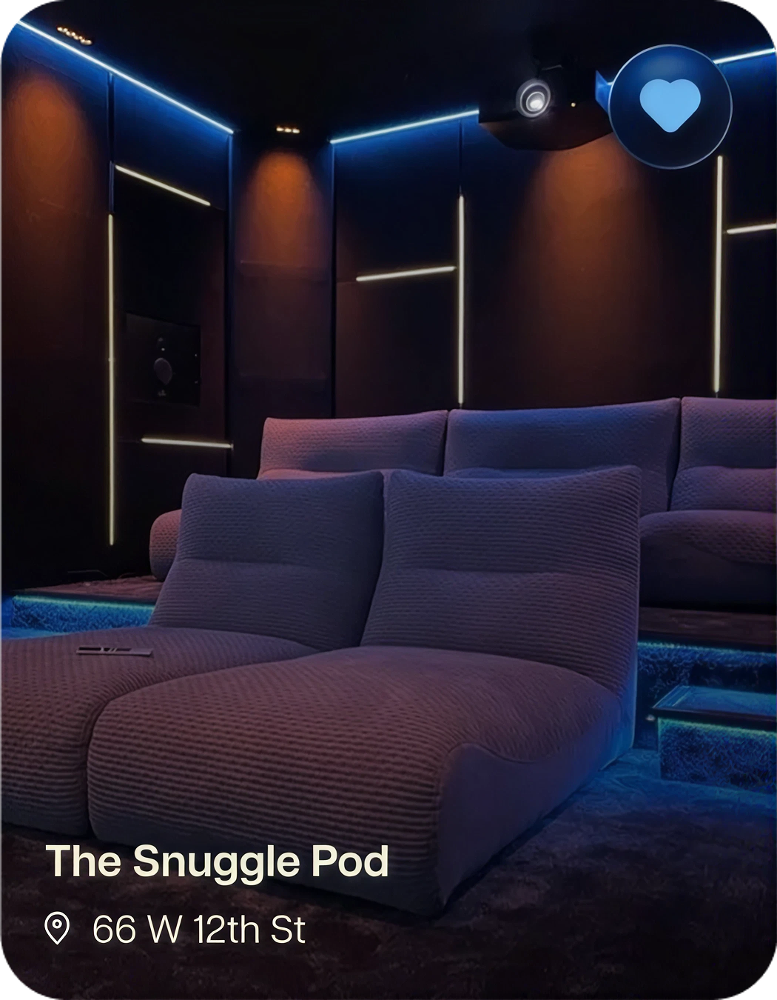
Pod
1–4 people · $40/hour · 1-hour minimum
A cozy room for date nights, small hangouts, and watch parties.
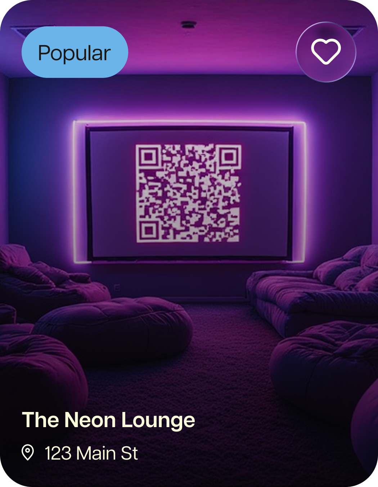
Lounge
5–10 people · $80/hour · 2-hour minimum
Space for friend groups, casual get-togethers, and weekly shows.
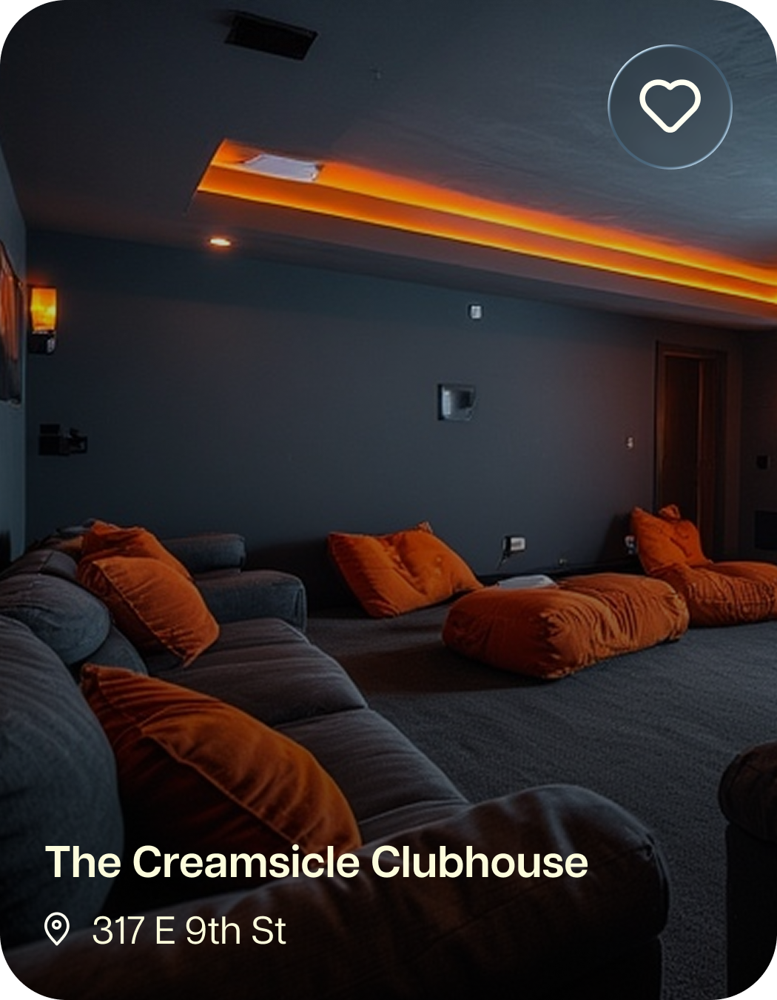
Clubhouse
11+ people · $110/hour · 2-hour minimum
A bigger room for parties, large groups, and big-screen marathons.
Core flows
From making plans to pressing play
GET STARTED
Start browsing in seconds.
A quick onboarding takes users directly into exploring available rooms.
Discover & Book
Find the right room for your group.
Filter by location, time, and group size, compare rooms in list or map view, and book by the hour.
Check In
Make getting in as easy as showing up.
Receive a reminder an hour before your booking and scan your QR ticket to enter upon arrival.

Start Watching
Scan, connect, and start watching.
Scan the screen’s QR code to pair your phone, browse pre-signed-in streaming services, control playback, and track remaining time without needing your own accounts.

High fidelity
One connected experience, from booking to playback
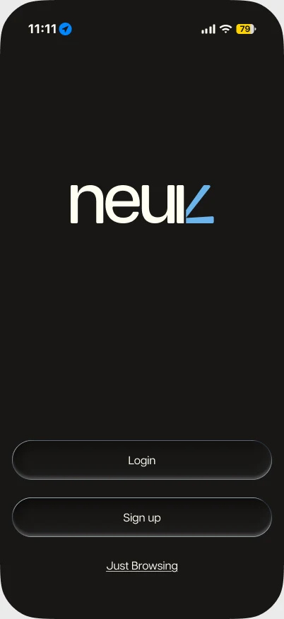
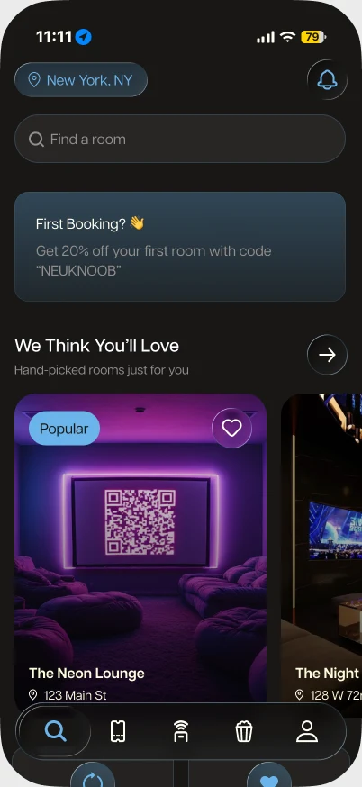
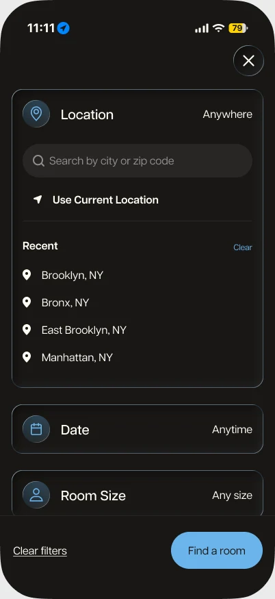

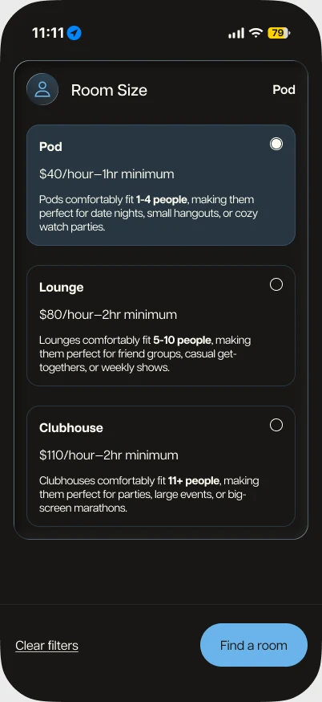


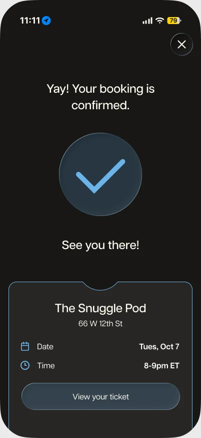
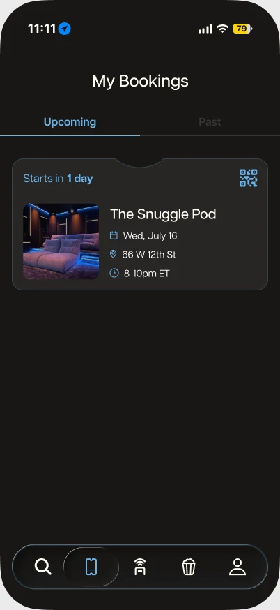


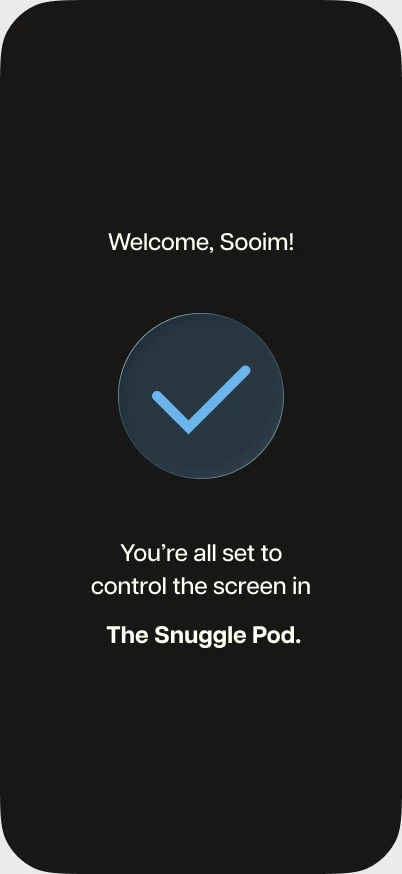

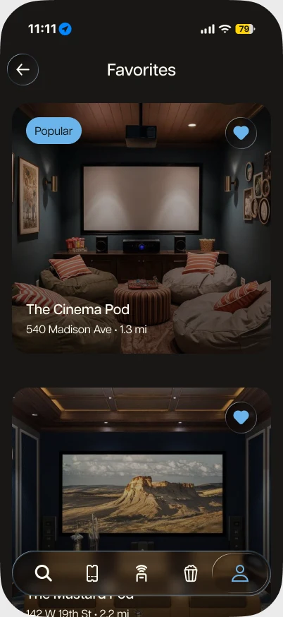
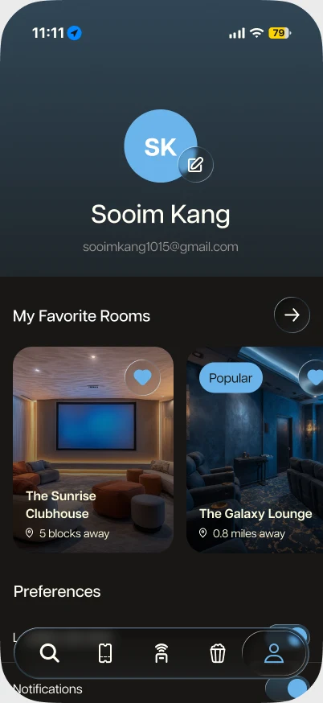
Research
Watching together is as much about spending time with friends as it is about what’s on screen.
I started with the market, then talked to people. A competitive analysis showed the gap between the places people already watch together. Interviews showed what keeps them from doing it more.
Competitive analysis
No existing option combines privacy, comfort, and theater-quality viewing.
Theaters offer immersion, apartments offer comfort, and bars offer social energy, but each compromises the group experience.
Competitive positioning
 Bars
Bars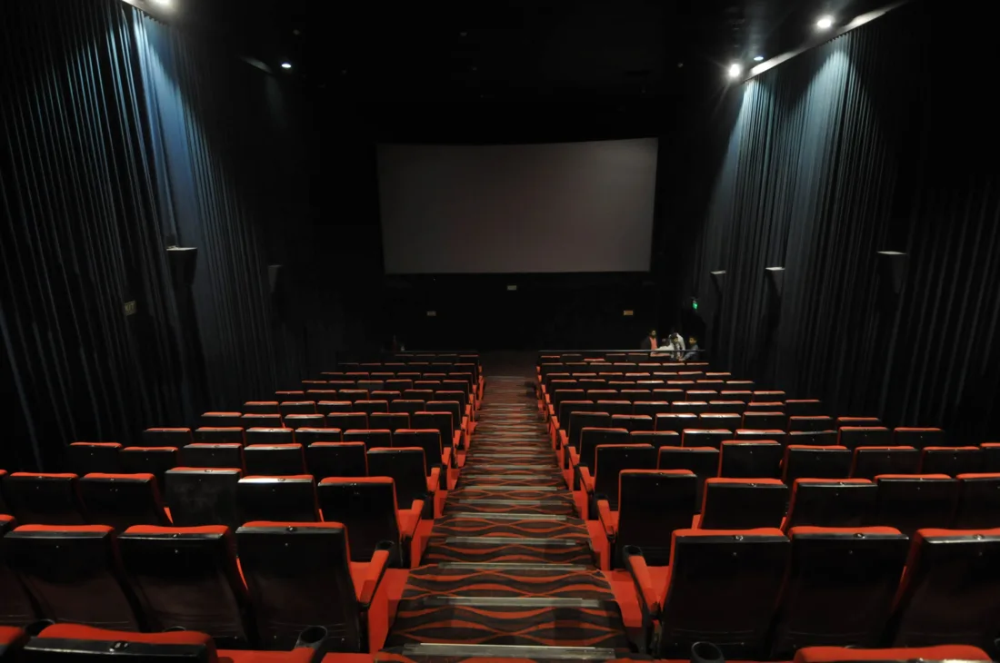
Theaters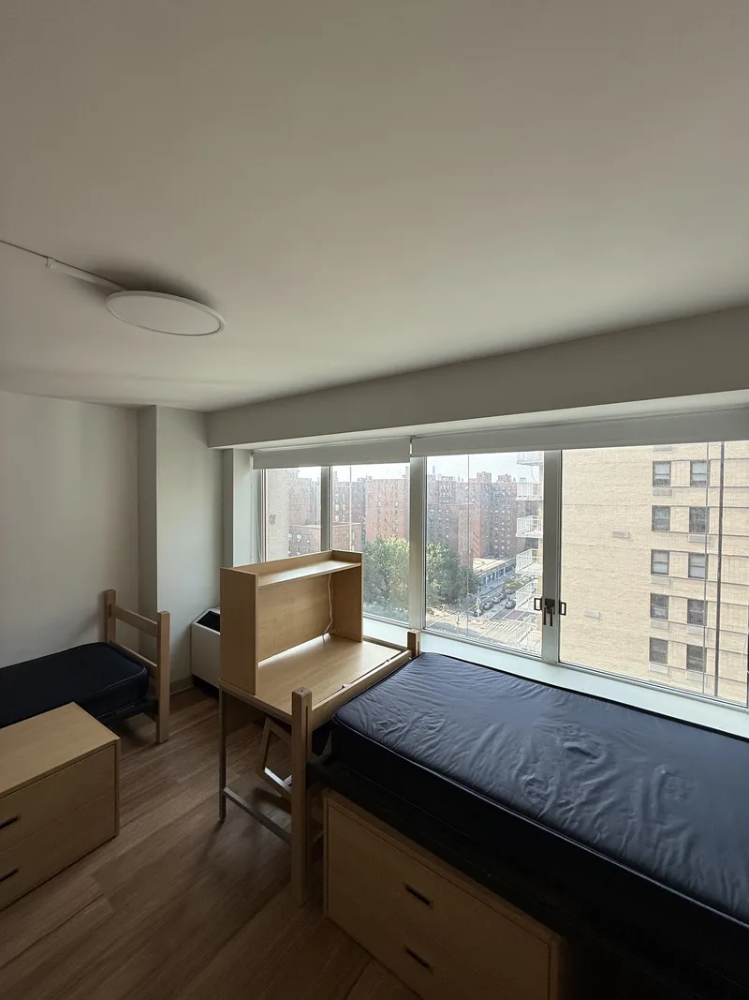
Apartments neuk
neukFeature Comparison
BarsneukUser interviews
The biggest barriers were space, coordination, and cost.
A screener of six frequent group viewers found interest in private screening rooms, with half reporting gatherings of seven or more people; follow-up interviews explored their needs and frustrations.
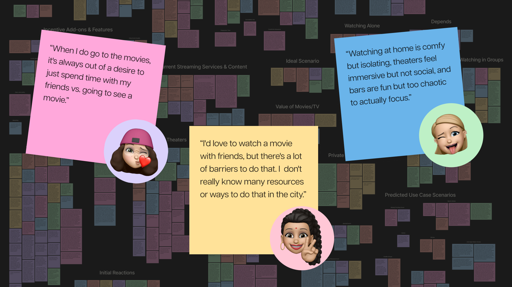
01
A middle ground between home and theater
Home is comfortable but cramped and a chore to host. Theaters are immersive but rigid and impersonal.
02
Planning is the pain
Finding a time, getting everyone there, and splitting the cost kill the plan before it starts.
03
The people matter more than the movie
Time with friends is the draw, and many want a plan that isn’t built around drinking.
04
Worth it when it’s split
Price worried people until it was framed per person: a private theater night for about $20 each.
System thinking
Designing the app and the physical experience as one service
I mapped the app, user journeys, and backstage operations to connect booking, room access, and streaming into one experience.
User Personas
Three viewing habits, three different needs


Map and blueprint
Connecting the booking flow to the service behind it
The blueprint maps each stage from discovery to rebooking across user actions, touchpoints, backstage operations, and supporting systems. Food and drink was mapped as a future service but excluded from the initial app.
System map The app
Service blueprint The room
Iterations & testing
People wanted cozy but elevated: the energy of going out with the comfort of home.
Concept testing informed the visual direction, while usability testing refined the booking and in-room experience.
Concept testing
Participants sorted rooms and food into what was and wasn’t their vibe.
Like a card sort with pictures: each participant sorted rooms, food and drink setups, and app features into my vibe, could sometimes be my vibe, and not my vibe, and left comments on what drew them in.
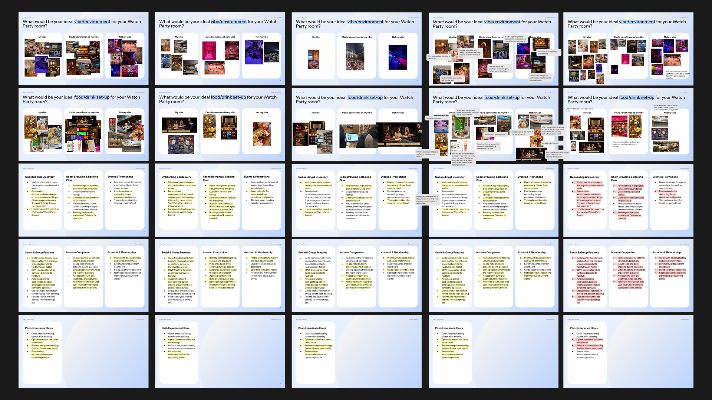
01
Not extremes
People gravitated to a balance of social energy and homey comfort.
02
Cozy but elevated
Warm lighting and soft seating, with a screen worth leaving home for.
03
Not a club
Neon, party-like spaces felt too distracting or impersonal for most.
Design directions
Three directions, exploring immersion, comfort, and social energy
Luma emphasized cinematic quality, neuk prioritized comfort, and Streamie explored nightlife energy. The final direction combined Luma and neuk.


What worked
The polish. It felt high-tech and official, like a real screening.
In the final: a dark palette with one blue accent that marks what to tap, plus 1px strokes and glass buttons that keep it sleek.
What didn’t
The neon. In concept testing, party-like spaces felt too distracting or impersonal, so the final kept the sleekness without it.
What worked
The name, and a sense of coziness, intimacy, and personal control.
In the final: the name neuk, rounded cards, pills, and buttons, and warm cream instead of stark white.
What didn’t
The mustard-and-rust palette and handwritten type. The final went dark like a theater instead.

What worked
The vibrancy, the nostalgia, and the playfulness.
What didn’t
Taken too far, it could feel kid-like and gamified.
Low-fidelity testing
Testers wanted to see more, be told more, and control less.
Twelve testers left notes screen by screen, from room cards that were too small to confusion about what happens after booking.

Bigger room cards
“Room cards are too small.” Cards grew, and more of each photo shows.
Guidance after booking
“I’m confused on the process after booking it.” A reminder, the ticket, and a welcome in the room now walk the group through.
A simpler remote
“Just on/off works for me.” The full color wheel for the lights became a simple toggle.
Branding
Cinematic enough for a night out, cozy enough to feel like home
I started by deciding what neuk is and isn’t, ran a naming sprint, and sketched the mark by hand. The identity combines Lume's cinematic palette with neuk's rounded forms, warm cream tones, and playful typography.
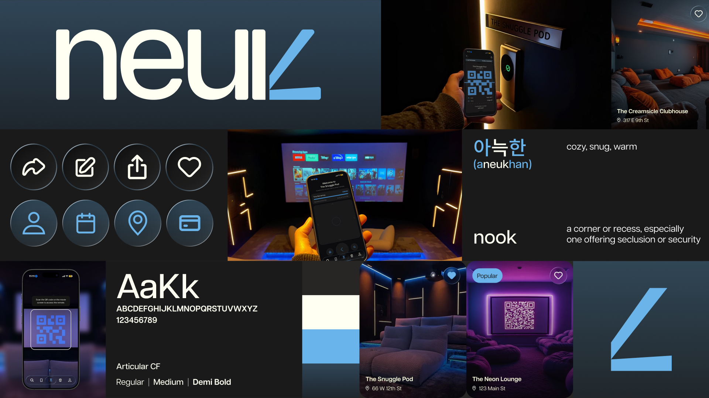
Next steps
By extending the experience beyond booking and playback, how might we...
Reflection
What began as a way to watch turned into a way to connect.
What began as a mobile booking concept became an exercise in connecting digital interactions with physical spaces, group dynamics, and the systems required to deliver a cohesive service.

Takeaway 01 · User behavior
Design around why people gather, not just what they gather to do.
Takeaway 02 · Service design
A seamless experience depends on the systems connecting digital and physical touchpoints.